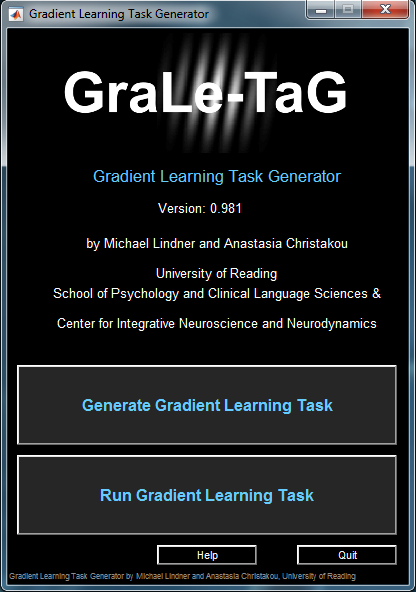
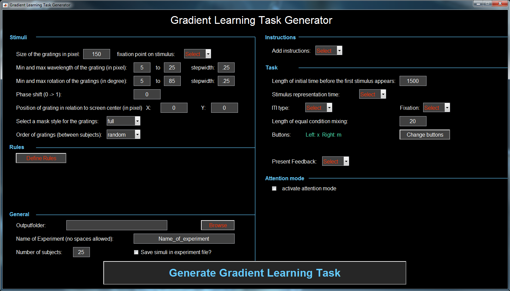
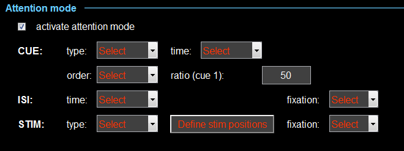

version 0.982
User Manual
Table of contents
GraLeTag is a GUI based tool easily generate and run gradient learning task experiments.
xxxxxxxxxxxxxxxx
For help and support feel free to contact: graletag@gmx.co.uk
GraLeTaG by Michael Lindner is licensed under CC BY 4.0
This program is distributed in the hope that it will be useful, but WITHOUT ANY WARRANTY;
Michael Lindner, 2018
Matlab 2015a or newer (www.mathworks.com)
Psychtoolbox 3 http://psychtoolbox.org/download/
Copy the file onto a folder on your hard drive. e.g. C:\SimonGrataGen
Add path to the files using „Set Path“ button or „addpath“ function. e.g. addpath('C:\SimonGrataGen')
GraLeTag is licensed under a creative commons Attribution-NonCommercial-NoDerivative 4.0 international license (CC BY-NC-ND 4.0: https://creativecommons.org/licenses/by-nc-nd/4.0/)
GraLeTag, the Gradient Learing Task Generator is a tool
thought to easily generate and run Learning and attentionen tasks using gradient stimuli
First steps:
Start the GraleTag.m function either by typing in run GraleTag.m in the Matlab command window or open the GraleTag.m in the Matlabs editor and press the run button in the Matlab menu bar.
The main menu of GraLeTag will open (see figure 1)

Figure 1: Main menu of GraLeTaG
from here you will have two choices (via two buttons):
Enjoy playing around with this tool!
With the GraLeTaG Generator you can set up different types of Gradient Learning and attention tasks with a few button presses.
For example you can generate Learning task using different rules, variable ,xxxxxxxxxxxxxxxx
And many more options are available using the generation GUI.
In the following, all input option of the Gradient Learning Task Generator (see figure 2) will be explained in detail.

Figure 2: Generate Learning Task Generator GUI
Stimuli
Size of gradient images: Size n of the gradient stimuli in pixel for creating and n by n image.
fixation point on stumuli: Present a fixation point in the center of the stimuli. Yes or No. If yes, a dialog appears to specify the size of the fixation point. The specified size will be displayed on the GUI (beside the fixation point pulldown menu of the ITI feedback).
Min and max wavelength of the grating (in pixel) and stepwidth: Using these three values the variation of the thickness and distance of the black and white bars on the stimuli can be defined.. E.g. using the defaults of min=5, max=25 and stepwidth=.025 produces 81 different "densities" of the black and wihtie bars. Below see two example images with wavelength of 10 and 20 and rotation of 10 degrees:
Min and max roation of the grating (in pixel) and stepwidth: Using
these three values the variation of the rotation of
the stimuli can be defined.. E.g. using the
defaults of min=5, max=25 and stepwidth=.025 produces 81
different clockwise rotations of the black and white bars. Negative
values will produce counterclockwise rotations. Below see two
example images with rotation of 10 and 20 degrees and wavelength of 10:
Phase shift: Phase shift of the waveform peaks in the image. With this value the "white" bars on the gradient images can be shifted horizontally before rotating the images. See three example images below with three phaseshift values:
Position of gratings in relation to screen center: The postion of the stimuli in relation to the screen ceter can be spcified (e.g. in case you want to present them on a specific place on the screen). You can shift the stimuli horizontally (X) or vertically (Y) by using positivevalues (right) or negative values (left).
Select a mask style of the gratings: The shape of the stimlu can be fedines as a full squatr
full:
gauss:
circle:
Order of gratings: The order of the stimuli can be have different random orders for each subject (random), or one random order can be used for all subject (pseudorandom).
Rules
Define Rules:
General
Output folder: Chose folder where the experiment file and the marker definition file will be saved.
Name of experiment: The parameter name of experiment is used as prefix for the filename for the output file in which all the specified parameters will be saved. It will also be used later when you run the experiment for the filename of the output file of each subject.
Number of subject: Specify the number of subjects that you want to run in the experiment. The generator will predefine the stimuli and order of trials etc. for all of the subjects.
Save stimuli in experiment file: The created gradient stimuli can be saved in the experiment parameter file. It is not neccessary for running the experiment later on, because if the stimuli are not saved, they will be created on the fly when running the experiment.But saving the stimuli allows the user to extract the stimuli for inspection or later use (e.g. for a publication).
Instructions
Add instructions: (Yes or No) Predefined images with instructions or task trials can be presented before the experiment starts.
If yes:
- How many instruction images consecutively? The number of images can be defined here.
- Specify buttons to end each instruction image separated by semicolon. For each instruction image the stop button can be defined (left or right). e.g. if you want to have left button or image 1, right button for image 2 and left button for image 3, you need to type in: left;right;left. The number of buttons need be identical to the number of used instruction images.
Task
Length of initial time before the first stimuli appears: Time between starting the experiment and the first.
Stimulus presentation time: The stimuli can be presented until the participant presses a button (endless) or for a maximum amount of time in which the participant can press a button (limited).
If you choose limited:
Specify the maximum presentation time in ms
Equal trial length? (yes or no): If button was pressed before the maximum presentation time, the trial will still wait until the maximum presentation time is over.
ITI type: Inter trial interval can be defined as a constant time for all trials of all subjects or as random or pseudorandom timings (pseudorandom = one random order used for each subject, random = different random orders for each subject). After
the selection a dialog box appears to specify the constant time or the
range of the random/pseudroandom times (in ms). The specified timing
will be displayed beside the pulldown menu
Fixation: Present fixation point in the center of the ITI screen. Yes or No. If yes, and not already specified a dialog appears to specify the size of the fixation point. The specified size will be displayed on the GUI (beside the pulldown menu).
Length of equal condition mixing: To prevent a bias of conditions in the random order this number is used to create cinsecutive random orders of this length.
Buttons - Change buttons: Using the Change button, the response buttons for the experiment can be changed (default x for left and m for right button).
Present feedback: (Yes or No). A feedback can be presented depending on the accuracy of users presponse.
If Yes:
- Feedback presentation time? The number of images can be defined here.
- Type of feedback. Texts or Pictures can be used as Feedback.
If Texts: Texts and text colours for correct and incorrect responses can be specified
if Pictures:
images (e.g. bmp) for correct and incorrect responses can be loaded. In
this case both images need to have the same size. They will be
presented in the center of the screen.
Attention mode
With
GraLeTaG you can add an attention mode to the learning task in terms of
presenting a Cue and two stimuli instead of one stimulus.
To create such kind of experiment, you need to tick the box to activate
the attention mode. Then additional options appear for the attention
mode (see figure 3)

Figure 4: Part of the Generate Learning Task Generator GUI after activating the attention mode.
Cue
type: As type of Cue
texts or images can be specified. In case of selecting text, an dialog
box appears where the Cue texts, cue text colours and cue font size can
be specified. Additionally, a horizontal shift can be defined to adjust the postion of the cue on the screen.
time: The presentation time of the cue can be defined as a constant time for all trials of all subjects or as random or pseudorandom
timings (pseudorandom = one random order used for each subject, random
= different random orders for each subject). After the selection a
dialog box appears to specify the constant time or the range of the
random/pseudroandom times(in ms). The specified timing will be displayed beside the pulldown menu.
order: The order of the cue can be random or pseudorandom.
ratio:
With the ratio the amount of the used cues can be defined. E.g. a value
of 30 would mean that 30% off all presented cues are cue 1.
ISI
time: The presentation time of the ISI between the cue ad the stimuli can be defined as a constant time for all trials of all subjects or as random or pseudorandom timings (pseudorandom = one random order used for each subject, random = different random orders for each subject). After the selection a dialog box appears to specify the constant time or the range of the random/pseudroandom times (in ms). The specified timing will be displayed beside the pulldown menu.
fixation: Present fixation point in the center of the ISI screen. Yes or No. If yes, and not already specified a dialog appears to specify the size of the fixation point. The specified size will be displayed on the GUI (beside the pulldown menu of the ITI ).
Stim
type: Here tye of the second stimulus (opposite of the attended side) can be defined either as 0 from rules, random or mirror. In case of mirror the second stimulus will be a mirrored version of the attended stimulus. In case of 0 from rulesrandom the type of the second stimulus is randomly chosen from full range of the specified rule used for the attended stumulus.
the type of the second stimulus is randomly chosen from the areas with 0 in the rules. In case of
Define Stim positions: Here the the positions of the two stimuli can be defined (horizontal (x) and vertical (y) shift related to the centre of the screen.). Specified values will be presented below the button.
fixation: Present fixation point in the center between the two stimuli. Yes or No. If yes, and not already specified a dialog appears to specify the size of the fixation point. The specified size will be displayed on the GUI (beside the pulldown menu of the ITI ).
Generate Gradient Learning Task
By
pressing this button GraLeTag generates all stimuli and images a 5x5 of
these stimuli - a representing range of combination of the defined
wavelengths and rotations of the gratings. If
the red colour (uncertainty area) was used in at least one of the
rules, the user will be asked how many consecutive trials NOT WORKING
YET.
The GraLeTaG creates one main output file. A Matlab .mat file containing a Matlab structure with all parameters needed to run the experiment. This file name is dependent on the NameOfExperiment that you defined in the first input (e.g. NameOfExperiment_parameter.mat). This file will be loaded whe using Run Gradient Learning Task.
If you use output triggers another output file will be created: a .txt file containing the description of the Marker (e.g. NameOfExperiment_Marker.txt). This file is only an information for the user and will maybe necessary for a later analysis of the data collected with the triggered device (e.g. EEG).
With the Run Gradient Learning Task you can start a predefined experiment created withthe generator.
Select experiment parameter file: Select the predefined parameter file of the experiment that you want to start.
Subject number: Select the predefined data of subject n for the experiment you want to run.
Multiple Screen detected: If you have more than one monitor detached to the PCs on which you want to run the experiment, you can specify on which monitor you want to present the experiment. Usually using value 0 the experiment will be presented on both screens (extended not duplicated!) and the value 1 to n are for the different monitor. But depending on your hardware and software setup this may differ. Therefore, you need to test it in advance on the PC on which you want to run the experiment.
xxxxxxxxxxxxxxxx
xxx
The GraLeTaG saves a text file for each subject containing the information the following information (column) of each trial (rows):
RuleNr: Used rule for the trial.
Ruletype: xxxxxxxxxxxxxxxx
TrialNr: The trial number of the experiment
Time: Cumulative onset time of the trial in respect of the start f the experiment.
Cond: Trial condition
ButtonNr: Which button was pressed by the user (1=left)
ACC: Was the Button press of the participant correct (1) or not (0).
RT(ms): Reaction time (time difference between dot presentation and button press)
RollACC: Rolling accuracy depending on the specified rule settings
Crit: xxxxxxxxxxxxxxxxxx
tilt: Rotation angle of the gradient stimulus in the attended position
freq: Wavelength of the gradient stimulus in the attended position
ITI: ITI duration
If attention mode was used:
Cue: Which cue was presented (1) or (2)
ISI: ISI duration
tilt2: Rotation angle of the second gradient stimulus
freq2: Wavelength of the second gradient stimulus
If feedback was used:
FBISI: ISI duration between stimuli and feedback